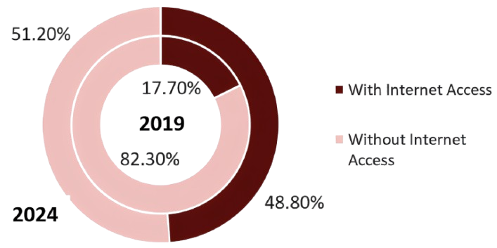

The digital divide does not only exist as a definition — it affects people in real ways. On this page, we explore the struggles, causes, statistics, and impacts that highlight the seriousness of this issue.
One of the main reasons for the digital divide is the high price of internet and gadgets. In the Philippines, the cost of internet plans is quite high relative to the income of most families. On top of that, laptops, tablets, and smartphones also cost a lot. Because of this, only those who can afford these things are able to fully join online learning, work, and other digital activities.
Another cause is the lack of skills to use digital technology. Many Filipinos, especially older people or those from less educated areas, do not know how to use websites, online tools, or even basic applications. Some are also not aware of online safety. This knowledge gap causes them to be reluctant towards using digital platforms, abandon them and leave them behind as others progress.
People in rural places also face problems with weak internet connections. Certain provinces and distant barangays have slow signals, and some of them have no stable coverage at all. This renders the participation of online classes, employment, and online health services very challenging to the residents. At the same time, cities have quicker connections, which increases the divide even further.
Culture and language also add to the divide. The majority of internet sources are in English, and it can be challenging to people familiar only with Filipino or with local dialect. Some people also feel nervous using technology because they are afraid of making mistakes. This digital anxiety stops them from exploring opportunities online even if they have access.
Not everyone feels the need to use the internet. Some prefer face-to-face interaction or traditional ways of doing things. Technology can be perceived as something unnecessary or too complex to older generations. This lack of interest, along with the lack of support in order to learn, keeps them out of the advantages of the digital world.
Telecommunications in the Philippines is still dominated by a few big companies, making competition weak and services expensive. In addition, bureaucratic processes for building towers or laying fiber cables slow down infrastructure expansion. This means that even when demand is high, progress in improving internet speed and coverage is delayed. The lack of strong regulation and market competition continues to keep costs high and access limited.
In many rural or far-flung areas, electricity is either unstable or not available at all. Even if people can afford devices and internet plans, they cannot use them effectively if power is unreliable. Frequent brownouts, high electricity costs, and the lack of charging stations make it harder for families to stay connected. Without consistent power, technology use becomes impractical and discouraging.
Cybersecurity threats such as scams, fraud, and misinformation discourage many Filipinos from engaging online. People who hear about phishing, hacking, or online harassment may become afraid of using digital platforms. For women and small business owners in particular, concerns about privacy and online safety keep them from joining digital markets or online banking. Without proper training in digital safety, people lose confidence and avoid technology.

The double doughnut chart compares household internet access between 2019 and 2024. In 2019, fewer than one-third of households had internet at home, while by 2024, this proportion increased to 48.8%, nearly doubling previous access. Despite this growth, more than half of Filipino households remain without home internet, highlighting the ongoing challenges in bridging the digital divide.
Source: InsiderPH, PSA-DICT Survey on Internet Access at Home, 2019 & 2024
The table shows the percentage of individuals aged 10 and above who used the internet across different regions in the Philippines in 2024. Overall, 67.3% of Filipinos have internet access. Urban areas, particularly the National Capital Region (NCR), have the highest connectivity at 79.3%, while regions in Mindanao, such as the BARMM, lag behind at 40.0%. This regional variation highlights the persistent digital divide, with access being strongly influenced by infrastructure, urbanization, and socioeconomic factors.
| Region | % of Individuals |
|---|---|
Philippines (National) |
67.3% |
National Capital Region (NCR) |
79.3% |
Cagayan Valley |
74.9% |
Ilocos Region |
74.3% |
Central Luzon |
74.0% |
Cordillera Administrative Region (CAR) |
71.8% |
CALABARZON |
71.4% |
Central Visayas |
67.8% |
Eastern Visayas |
66.5% |
Caraga |
65.6% |
MIMAROPA Region |
63.6% |
Bicol Region |
63.4% |
Western Visayas |
61.5% |
Northern Mindanao |
61.4% |
SOCCSKSARGEN |
60.9% |
Davao Region |
53.4% |
Zamboanga Peninsula |
49.6% |
BARMM |
40.0% |
Source: PSA-DICT Survey on Internet Access at Home, 2024
Understanding the problems is the first step. Now explore proven solutions and discover how you can contribute to bridging the digital divide.